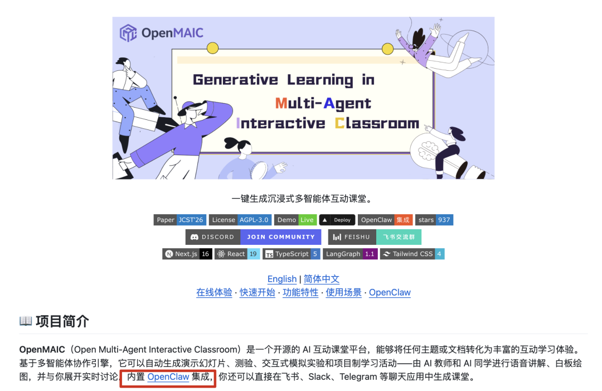
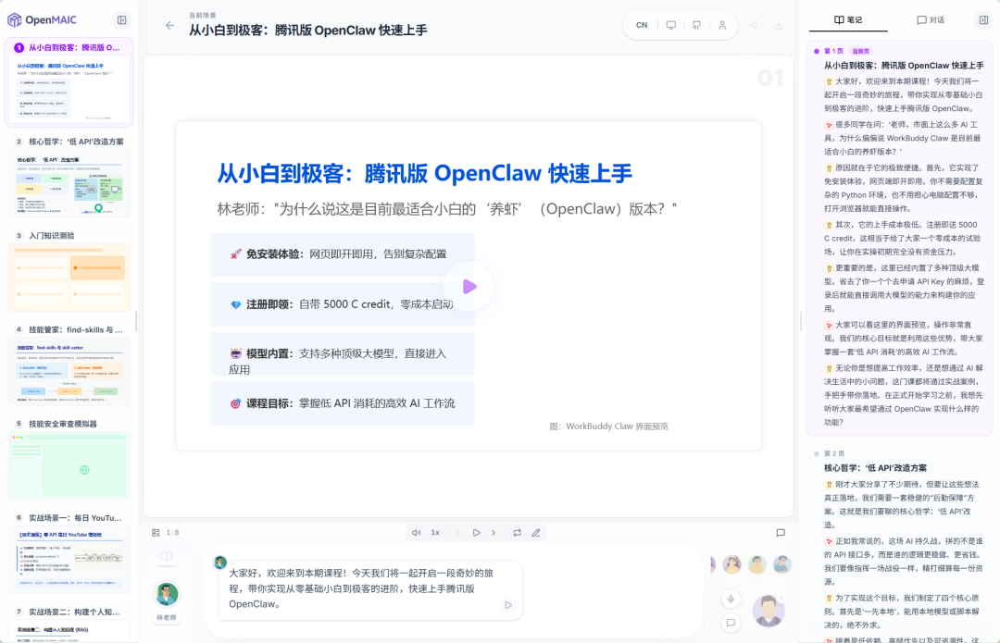
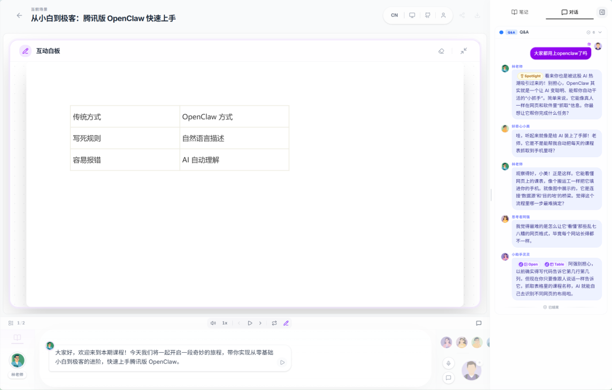
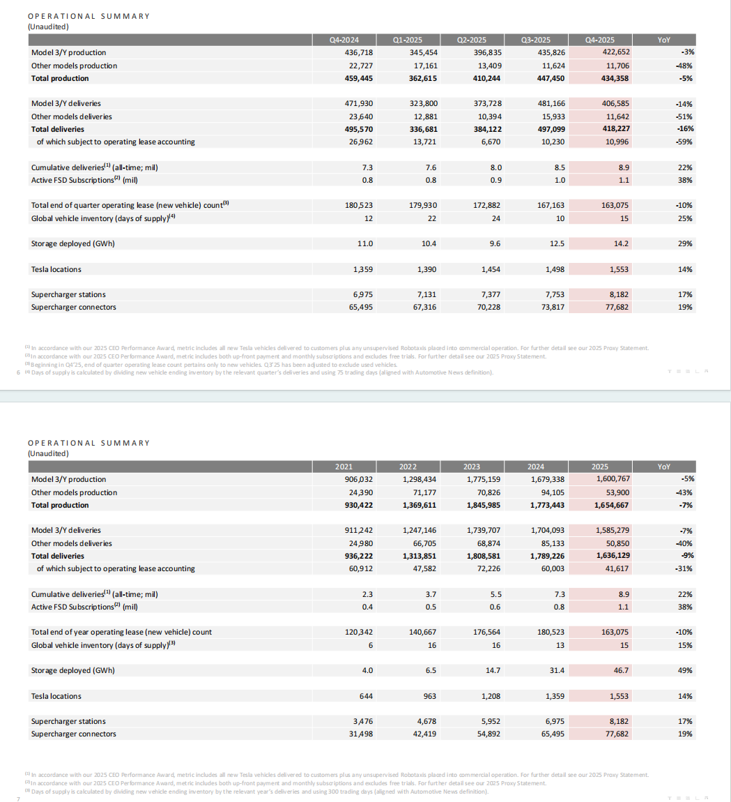
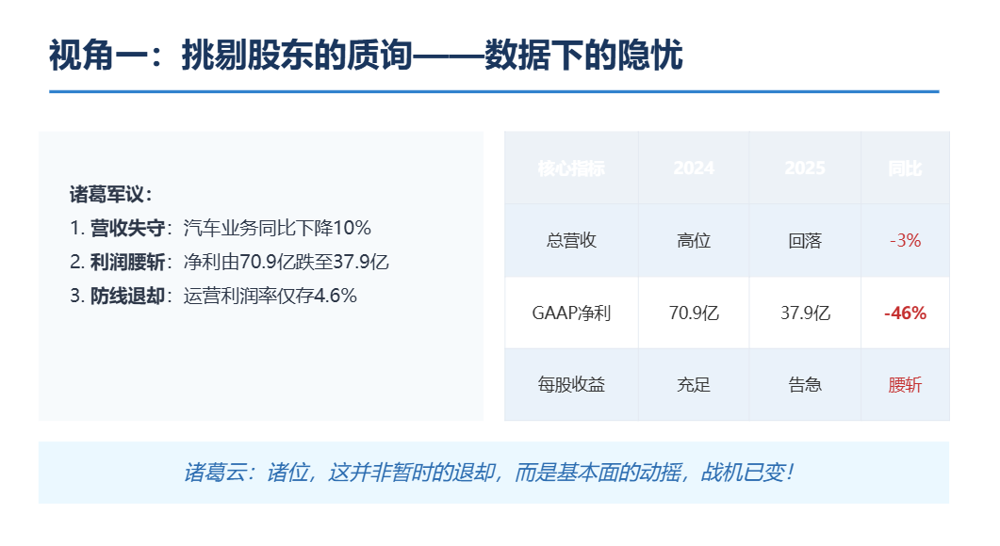
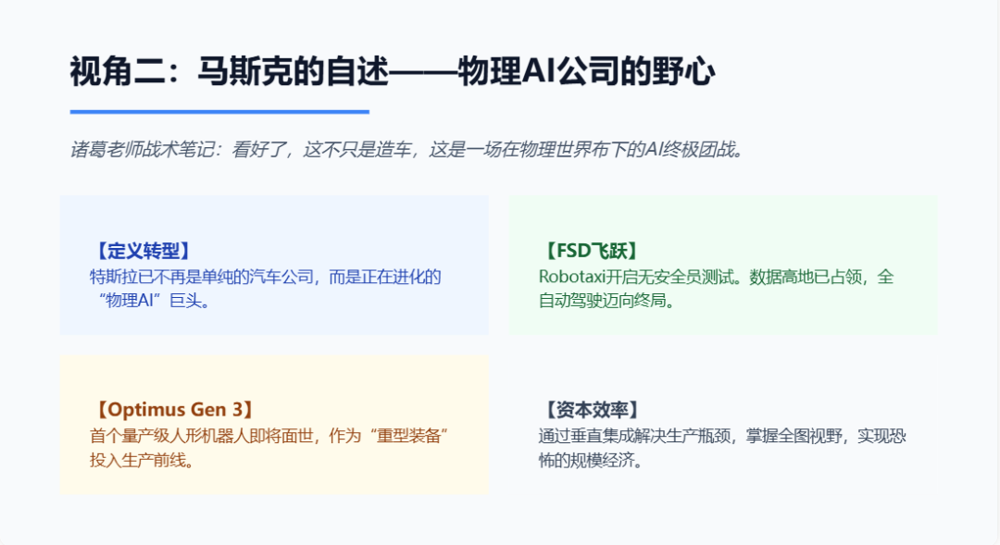
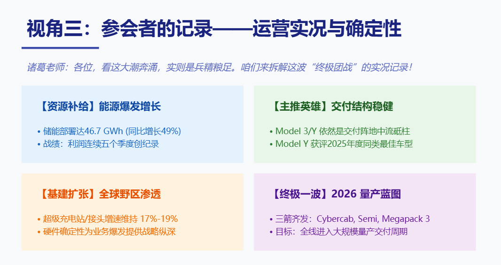
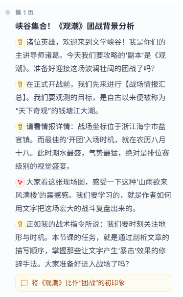
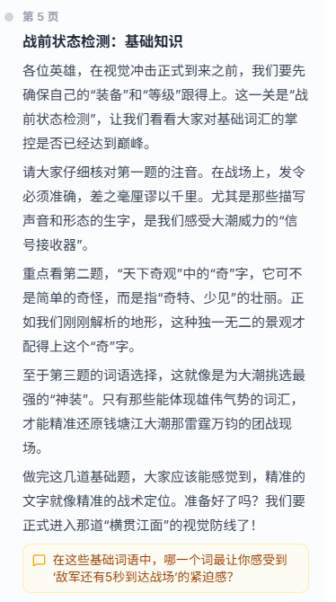
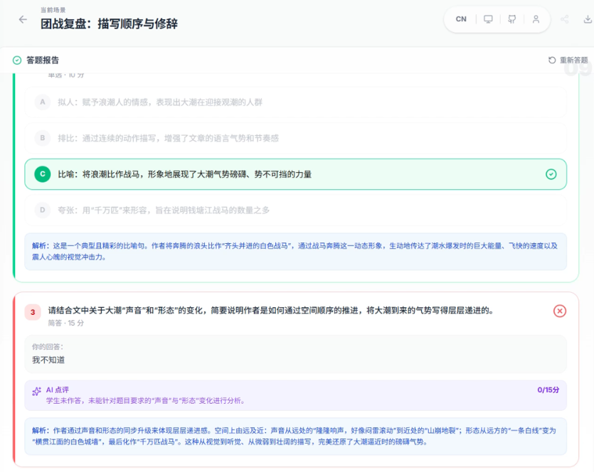

我一直都是在各个地方，Claude Code，OpenClaw，Codex上把各种各样需要长期记忆的文档上传到NotebookLM，然后再解析消化的。
这两天在X上找到了一个开源平替，清华团队新开源的OpenMAIC，也集成了OpenClaw。

🔗 https://open.maic.chat/
这玩意儿，大概就是把一个全能的AI教学团队，包括一个教授，助教，甚至一群性格各异的AI同学，打包塞进你的电脑。你扔给它任何东西，一本书，一篇论文，一个网址，它都能给你变出一堂能互动辩论，还带随堂练习的私教课。
我直接带你们走一遍，看看这东西到底有多6。
我输入9个字，迈向通用的人工智能，
直接得到了一节完整的AI科普课程，
包含14页图文并茂的PPT，12段讲解音视频，文字版的笔记，2个随堂小测验，
他们token都不要钱的吗？
我的内容很多是教程指南类，我就在想有没有可能把我的文章变成在线课，这样跟学就更方便了。于是我便随手找了篇最近的文章上传到OpenMAIC，几乎没有提示词，点击进入课堂。
接着就是解析PDF文档，并自动根据内容生成了5个课堂角色，也就是我的老师和同学们。
点击继续，AI智能体就开始工作了，生成课件PPT，课程视频，教学动作，互动内容.....
最终的页面是这样，
左侧是课件PPT，中间是授课区，上半区是授课视频，下半区是同步讲解。右侧是笔记和对话。

最右边的对话也是最让我惊喜的地方之一。
OpencMAIC生成的课程，不是单向度的老师向你讲解。它是有交互的。我随便问了个问题，老师和同学们真的讨论起来了，

可以自定义对话轮数，这里我设置了最大对话轮数5，因为角色比较多，一人一句就没了。
但是，这已经超出了一个课堂i人的梦想。
你们有没有过在课上不敢举手提问，又怕自己的问题太简单会丢脸的经历。在OpenMAIC里，可以毫无顾虑地让自己的疑问表达出来。
再比如，特斯拉35页全英的Q4财报，PDF直接丢给OpenMAIC，
附件是特斯拉财报，请以挑剔的股东、马斯克本人、参会人员三个视角带我深入了解财报信息

很快，课堂角色出来了。
OpenMAIC自定义了讲师是林教授，一位资深财务分析专家，另外三个角色分别是，助教马斯克，助教犀利投资人，和学生会议观察员。
最终的完整课程里，也有根据人设来拆解的财报数据。
股东关注盈利数据，

马斯克自述转型AI的野心，

参会者分析了运营执行中的策略，总结了特斯拉的扩张路径。

完整PPT共9页，老规矩，公众号回复 清华 就好了。
我还看到一种很邪修的玩法，让OpenMAIC来AI带娃。比如，我让OpenMAIC用王者荣耀的方式学习语文课文《观潮》。
从角色生成这一步就成功吸引了我的注意，五人开黑小队集合，诸葛老师，露娜助教，学生是小鲁班，铠和大乔。
它的课件，也不是王者元素的简单贴片，是真的融合了游戏和《观潮》。
最好的观潮时机=最佳开团时刻，
观潮准备=装备和等级，
大潮来临前的紧张=敌军还有5秒抵达战场，
随堂测验=团战复盘。。。


放一下课程原片段，推荐你们听下。
我是真听完了，从技术上讲，这背后是多智能体交互，RAG，TTS等一堆技术的缝合。
但从体验上讲，这根本不是什么严肃的技术演示，这就是一场沉浸式的剧本杀，只不过剧本是你自己定的，目标是让你学会知识。
而且，它还准备了随堂测验。
直接随课件生成，递进式的测验。
第一趴，战前状态检测，基础知识测验，
第二趴，团战复盘，描写顺序与修辞，
第三趴，峡谷文豪挑战赛，创意写作。
答完题后，有AI批改，并且会给出详细的解析。

太牛了。
寓教于乐在这一刻具象化了。
课前准备—授课—课后测验—试卷批改&讲解，这一整套流程都完全自动化，我唯一做的事就是开头那句提示语。
如果说NotebookLM是我的一个私人图书管理员，可以随时向它咨询。
那OpenMAIC，就是直接给你建了一所7x24小时不下课的专属大学，
里面有教授，有助教，甚至还有一群性格各式各样的AI同学。
它最大的意义在于，
把创建个性化互动式教育的门槛，
从一个庞大的团队，
降低到了任何一个有电脑的人。
因为是开源项目，
它支持几乎所有主流模型。语音的部分也有接一些现成的API，比如Qwen，GLM，OpenAI。
还支持智能体的配置，音频的配置（有TTS和ASR），各种PDF解析工具。
可玩性非常非常高，
我们已经到了人人都能办3分钟大学的时刻了，
从人找知识，到知识为人定制。
这本身，
就是一件超酷的事。
@ 作者 / 卡尔
最后，感谢你看到这里👏如果喜欢这篇文章，不妨顺手给我们点赞｜在看｜转发｜评论 📣
如果想要第一时间收到推送，不妨给我个星标🌟
如果你有更有趣的玩法，欢迎在评论区聊聊🤝
更多的内容正在不断填坑中……